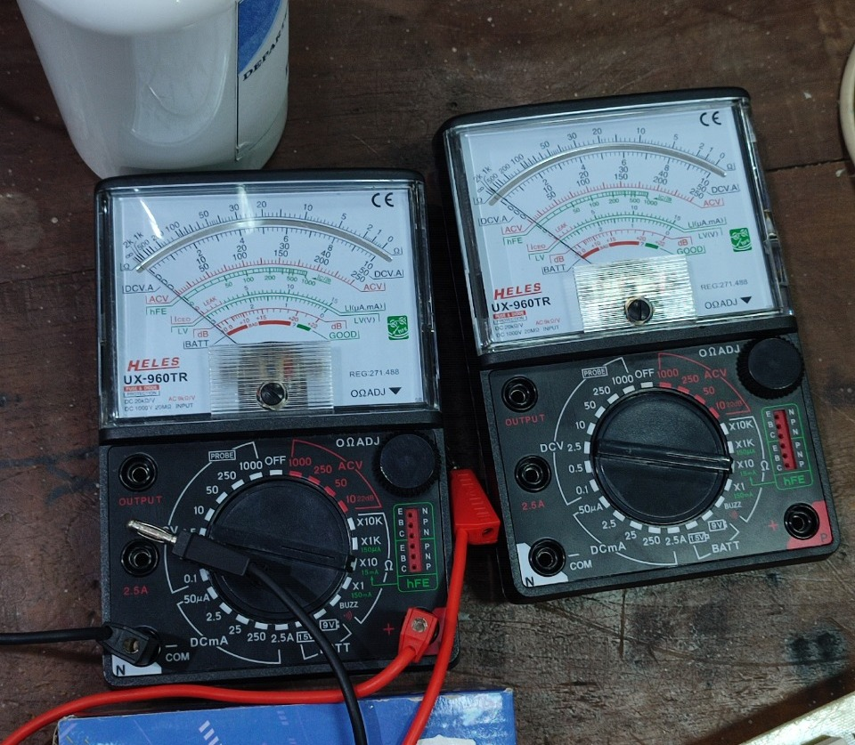
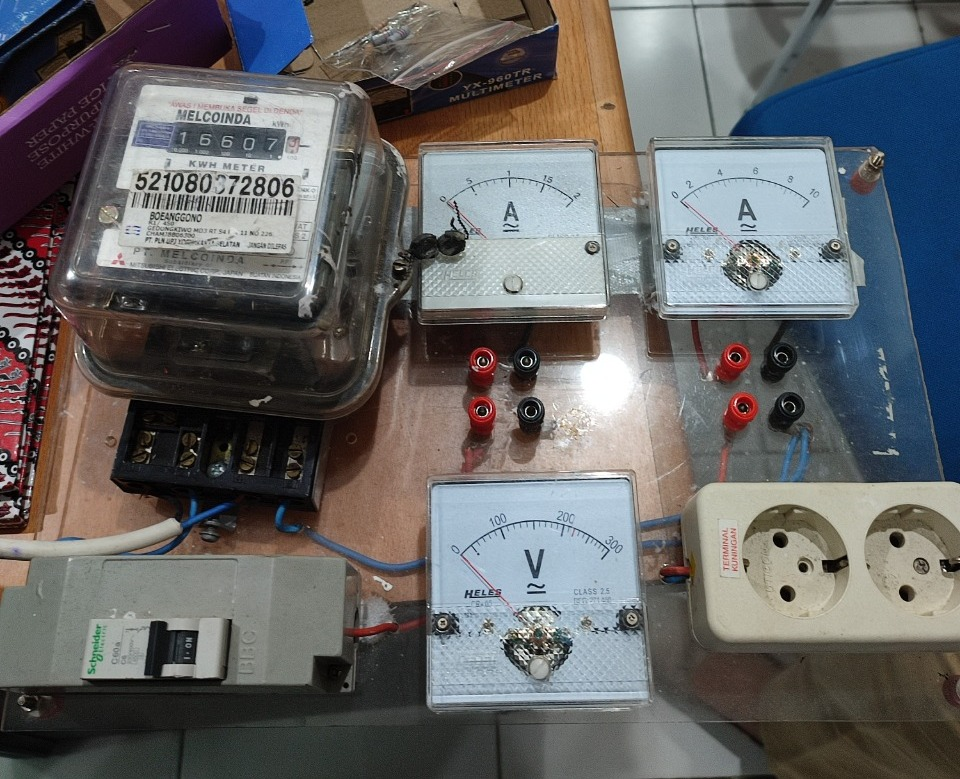
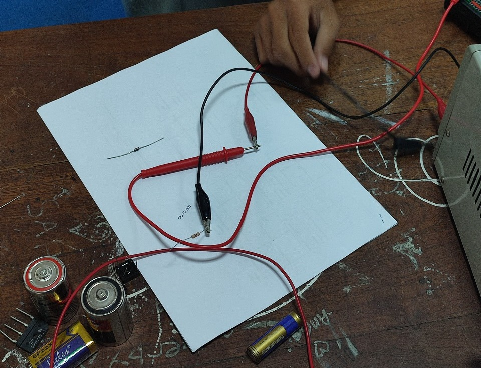

LAB. LISTRIK DASAR
LABORATORIUM TEKNIK LISTRIK DASAR

Pada hari selasa, 6 september 2022 para mahasiswa melakukan praktikum “Pengenalan Alat Ukur”
Tentang LAB. TEKNIK LISTRIK DASAR : Laboratorium ini mengelola kegiatan praktika Teknik Elektro Dasar yang memberikan pemahaman melalui pengamatan di Laboratorium bagi mahasiswa di tahun pertama. Laboratorium ini juga mendukung kegiatan-kegiatan penelitian, dan pengabdian pada masyarakat.
PENGENALAN ALAT UKUR LISTRIK
1. Dasar Materi
Alat Ukur adalah perangkat untuk menentukan nilai atau besaran dari kuantitas atau variabel. Alat ukur listrik adalah alat yang digunakan untuk mengukur besaran - besaran listrik yang mengalir seperti hambatan listrik (R), Kuat Arus listrik (1). Beda Potensial listrik (V). Daya listrik (P), dan lainnya. Terdapat dua jenis alat ukur yang digunakan yaitu alat ukur analog dan alat ukur digital. Alat ukur listrik analog merupakan alat ukur generasi awal dan sampai saat ini masih digunakan. Bagiannya banyak komponen listrik dan mekanik yang saling berhubungan. Bagian listrik yang penting adalah, magnet permanen, tahanan meter dan kumparan putar. Bagian mekanik meliputi jarum penunjuk, skala dan sekrup pengatur jarum penunjuk. Alat ukur digital adalah alat ukur yang menunjukan besaran yang diukur dalam bentuk angka. Dengan alat ukur digital kesalahan pembacaan dihilangkan oleh penunjukan langsung dengan angka dari besaran yang diukur, dan titik desimal ditunjukan pula secara langsung untuk memudahkan pengukuran.
2. Macam-macam alat ukur lisrik
a. AMPERE METER
Amperemeter adalah alat yang digunakan untuk mengukur kuat arus listrik.
b. VOLT METER
Voltmeter adalah suatu alat yang berfungsi untuk mengukur tegangan listrik.
c. OHM METER
Ohm meter adalah alat yang digunakan untuk mengukur hambatan listrik yang merupakan suatu daya yang mampu menahan aliran listrik pada konduktor.
d. FREKUENSI METER
Frekuensi meter yaitu suatu alat ukur yang digunakan untuk mengukur frekuensi sinyal/gelombang listrik
e. COS π METER
Cosphimeter adalah alat yang digunakan untuk mengetahui, besarnya faktor kerja (power factor) yang merupakan beda fase antara tegangan dan arus.
f. GALVANOMETER
Galvanometer adalah alat ukur listrik yang digunakan untuk mengukur kuat arus dan beda potensial listrik yang relatif kecil. Galvanometer tidak dapat digunakan untuk mengukur kuat arus maupun beda potensial listrik yang relatif besar, karena komponen komponen interainya yang tidak mendukung.
g. LCR METER
LCR Meter adalah sebuah perangkat elektronik yang digunakan untuk mengukur induktansi (L), kapasitansi(C), dan resistansi(R) dari suatu komponen.
h. LUX METER
Lux meter adalah alat yang digunakan untuk mengukur besarnya intensitas cahaya di suatu tempat. Semakin jauh jarak antara sumber cahaya ke sensor maka akan semakin kecil nilai yang ditunjukkan lux meter.
i. POWER METER
Power meter adalah suatu alat ukur yang bisa mengukur besaran-besaran listrik secara terintegrasi dari beberapa komponen alat ukur menjadi satu kesatuan yang terangkai dalam suatu alat ukur. Alat ini dapat memudahkan anda dalam meneliti besaran besaran listrik
j. MEGA OHM METER (MEGGER)
Megger adalah merupakan salah satu alat ukur yang berfungsi untuk mengukur tahan isolasi dari suatu instalasi atau untuk mengetahui apakah penghantar dari suatu instalasi terdapat hubung langsung, apakah antara fasa dengan fasa atau dengan nol atau dengan pembumian.
k. KWH METER
kWh Meter adalah adalah alat yang digunakan oleh pihak PLN untuk menghitung besar pemakaian daya konsumen.
l. MULTI METER
Multimeter atau multitester adalan alat pengukur listrik yang sering dikenal sebagai VOM (Volt-Ohm meter) yang dapat mengukur tegangan (voltmeter) hambatan (ohm-meter), maupun arus (amperemeter).
m. THERMOVISI
Thermovisi adalah instrument untuk memvisualisasikan dan mendeteksi suhu pada suatu objek yang di tangkap dan di tampilkan ke sebuah display dsigan teknologi inframerah.
3. Alat-alat yang digunakan
DC/AC Analog Meter, Panel uji coba, Kabel Jumper/Jepit Buaya
  